dlac — gear automation without the Lua
A beginner's guide. You need to know nothing about LuaAshitacast, and you will never edit a file.
1. What dlac is (and what LuaAshitacast is)
LuaAshitacast ("LAC") is the addon that actually swaps your gear. It watches what you do in game — casting, engaging, resting — and equips gear sets at the right moments. Classically you configure it by writing Lua code in a profile file per job.
dlac replaces the code-writing with a window. You build sets by clicking items, wire them to game events with simple rules, and flip combat modes with keybinds — and dlac writes the files for you. The files stay readable and hand-editable if you ever want to look, but they are storage, not the interface.
2. First-time setup
- Drop the
dlacfolder intoAshita\addons\and run/addon load dlac(add it to your boot script to load it every time). - Press CTRL+K (or type
/dl ui) — the window opens. - Click the red Setup button, top-right. It converts your current job's profile in place (your own logic is kept and backed up), or writes a fresh starter if the job has none — including the four classic trigger rules you'll read about below.
- Click Reload LAC. Done — repeat Setup once per job.
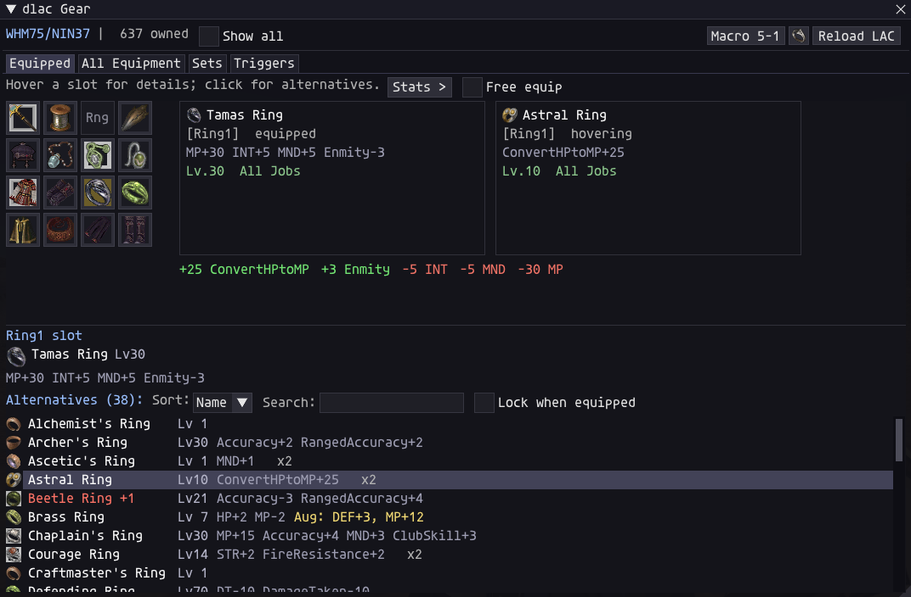
3. Sets — your gear plans
A set is a plan: for each equipment slot, a list of items you'd like there. It's a list (not a single item) because dlac picks the best entry for your current level — you can put the Lv30 ring and the Lv54 upgrade in the same slot, and the set follows you as you level. A set doesn't have to fill every slot: slots a set doesn't mention are left exactly as they are (partial sets are how overlays work — more under Triggers).
Adding a set
- Open the Sets tab.
- Type a name (say
Idle) and click New. - Click a slot in the 4×4 grid, then + Add — a searchable picker of gear you own and can equip appears. Click items to add them to the slot's list.
- Or skip the clicking: set stat weights in the right-hand panel (say Haste 5, Accuracy 3) and press Auto-build — dlac fills every marked slot with your best-scoring owned gear, as a level-scaling plan. The build-slots grid (a 4×4 of checkboxes above the button) marks which slots Auto-build touches — weapons start unmarked so building never resets your TP; tick them when you do want weapons picked. Each set remembers its own marks, right beside its weights.
- Click Commit (it turns red when you have unsaved changes), then Reload LAC.
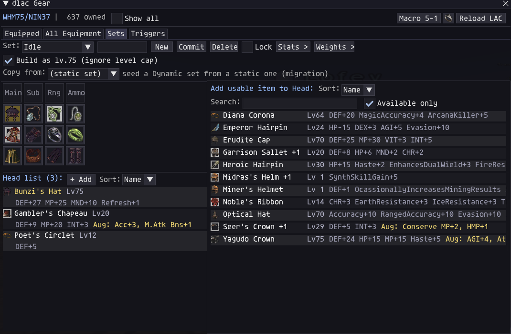
Idle set loaded, the Head slot selected (its
plan holds three hats for different levels), and the + Add picker open on the right —
searchable, with "Available only" filtering to gear you can equip right now.min 30 / max 54) and
a mode gate (see Modes below). That's how one set stays correct
from level 10 to 75.Set bonuses
Some gear only shows its worth in company: Lava's + Kusha's Rings together add ATT+6 / ACC+12 / DEF+6, the Iron Ram pieces grant a bonus that grows with every piece worn, and so on. dlac knows all of these sets and shows them wherever the item shows:
- Hover any set piece and its tooltip lists the bonus ladder (what 2, 3, 4, 5
pieces grant), which partner pieces complete it, and a
*on every partner you already own. - Worn totals and Set totals include active bonuses in the numbers, with a caption underneath naming the set — gold when active (Set: Lava's Ring + Kusha's Ring (2/2)), dim when you're a piece short (1/2 — bonus at 2), so a near-miss is visible at a glance.
- Auto-build counts them too: when weights are set, the optimizer scores whole
combinations — two individually modest rings win when their combined bonus
arithmetically beats the alternatives, and lose when it doesn't. (The plain
/dl max <stat>single-stat command stays a raw per-item maximizer and ignores set bonuses.)
4. Triggers — when sets get worn
A trigger rule says: when this happens, wear that set. Rules live in the Triggers tab, grouped by the game event that fires them. Several rules can match at once — they apply lowest priority first, and later ones overlay earlier ones per slot, so a small "partial" set (just a Waist item, say) can ride on top of a full one.
| Event | When it fires | Typical sets, and why |
|---|---|---|
| Default | Continuously, whenever you're not mid-action. This is your "standing around" state — it re-fires on status changes and keeps your baseline gear current. | Idle (regen/refresh/DEF — what you wait in),
Tp_Default when Engaged (acc/haste/DPS — what you melee in),
Resting (healing MP gear while kneeling),
Movement (movement speed while moving). |
| Precast | The instant you START casting a spell — before cast time is calculated. | FastCast gear: it shortens the cast. Potency gear does nothing here;
speed is everything. |
| Midcast | While the spell is in the air — before it LANDS. | Potency: CurePotency for Healing Magic, magic attack / skill sets for
nukes and enfeebles. The gear worn at landing decides the result. |
| Ability | When you use a job ability. | Ability-specific boosts (e.g. a Waltz set for potency). |
| Weaponskill | When you use a weapon skill. | WS sets: attack/STR for physical, the right stats per WS — often one set per favourite WS (rules can match by exact name). |
| Preshot / Midshot | Ranged attack: as the shot starts / while it flies. | Preshot = snapshot (faster shot), Midshot = ranged
accuracy/attack (a better hit). |
| Item | When you use an item. | Item-boosting oddities; most jobs need nothing here. |
| PetAction | When YOUR PET starts an action — a Blood Pact, a Ready move, a pet spell. Your other gear holds until the pet's action completes. | Pet-stat sets: Blood Pact potency for SMN, Ready-move gear for BST.
Match by name (contains = Predator) or catch-all. |
The rhythm of a spell, then: Precast (speed) → Midcast (potency) → back to Default (idle/TP). That's the whole trick classic "gear swap" addons do, and the starter rules Setup writes give you the Default row of it for free.
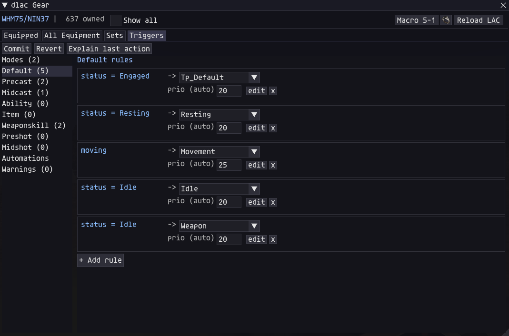
Adding a rule
In the Triggers tab, each event section has an + Add rule flow: pick the condition (status, spell skill, element, exact name, ...), pick the target set, done. Rule edits are live on Commit — no LAC reload needed. Conditions in one rule must all hold; the priority defaults sensibly (a rule matching an exact spell name outranks a generic "any Healing Magic" rule, so both can coexist).
Every event also takes player-state conditions — pick Player in the
condition box and a second list opens: raw and percent variants of HP and MP
(playerHPBelow, playerHPPercentBelow — percent is 0–100 — and
their Above twins, same for MP), tpBelow / tpAbove (raw TP —
1000 is one full shot), and Has(De)Buff / HasNot(De)Buff — a status effect
that must (or must not) be on you, picked from a searchable list of every buff and debuff
in the game. Stack them with any other condition: an emergency set below 50% HP, movement
gear only while Flee is up, gear that swaps in while you're Asleep. These gates rank just
under a mode toggle in priority, so they win over ordinary rules when both match.
Rules also take AND / OR logic: + & condition adds to the AND group
(all must be true), + | condition adds to the OR group (any one is enough). A rule
matches when all its & conditions hold or any of its | conditions does.
The classic use: | Has(De)Buff = Sleep, | Has(De)Buff = Lullaby
→ your WakeMeUp set (Toxin Earring says hello) — one rule, either sleep effect.
5. Modes — one set, several behaviours
Modes are named switches you flip; sets and rules can react to them. They come in two kinds:
- Toggle — on or off.
/dl mode DTflips it. Classic use: a damage- taken overlay you switch on when things get scary. - Cycle — a list of values, always holding exactly one.
/dl mode Weaponsteps to the next value (Caster → Melee → Caster…); the first value is active at login. Create them in Triggers → Modes, with an optional keybind that dlac binds for you (e.g. CTRL+F4) — no macro needed.
Two ways to let modes change your gear:
- Mode rules — a trigger rule with a mode condition:
mode
DT→ setDT. Mode rules run at the highest priority, so they overlay everything else. Good for toggles. - Mode-gated set entries — inside ONE set, give different rows a
mode gate (the B button): the Main slot of your
weapon set can hold Kraken Club when
Weapon:SoloKC, Divinity whenWeapon:Strong+KC, the auto-staff whenWeapon:Caster. One set, and the cycle decides which row is live. An entry can even list several values (any of them activates it).
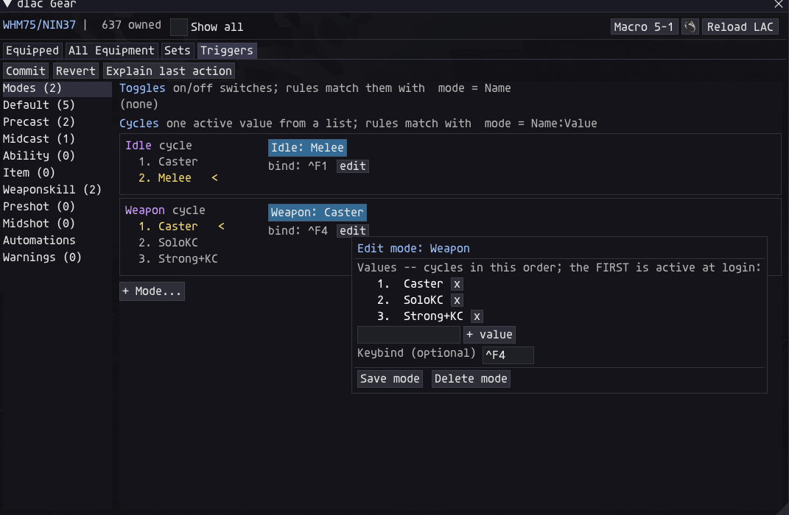
Idle and Weapon), each
with a keybind. The editor lists the values in cycle order — the first is active at
login.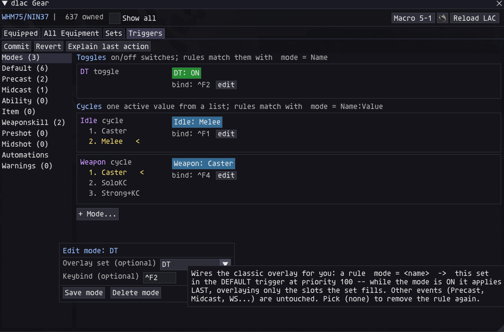
DT toggle wired to an overlay set: the tooltip explains the
mechanics — one rule in the Default trigger at priority 100, applied last, overlaying only
the slots the set fills.And here is what a mode-gated set looks like from the inside — one Weapon
set whose Main slot holds all three answers at once:
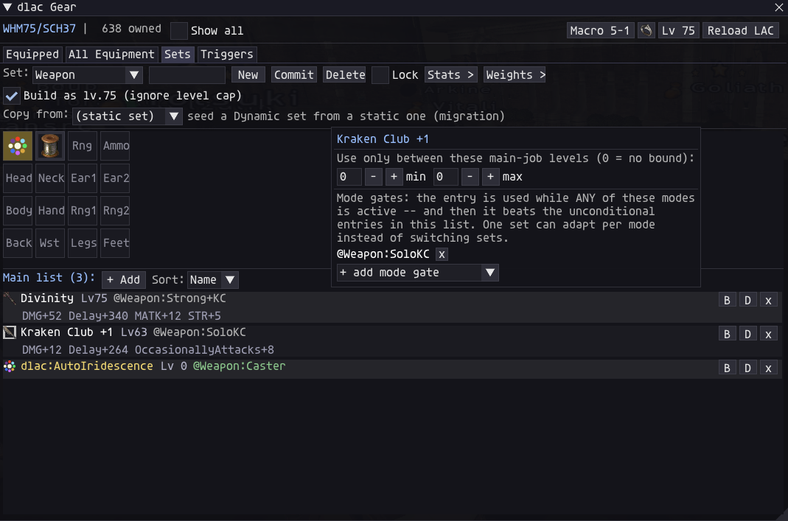
6. Automations — gear that picks itself
Some gear decisions are pure bookkeeping — the right elemental staff per spell, the right obi per day. Automations do those for you. They are virtual slot entries: in the + Add picker you'll find pseudo-items that you place in a set slot like any other item. Their icon is the 8-colour element wheel.
AutoIridescence (elemental staves) — Main slot
Add dlac:AutoIridescence to a set's Main slot (your caster/idle
set, or gated behind Weapon:Caster). On every cast, dlac equips
the best staff you own for that spell's element:
- Elemental staves boost their own element — NQ (+1 Iridescence) or HQ (+2);
- universal weapons cover every element — Iridal/Chatoyant for anyone, and job-specific pieces up to Iridescence +3 (Inanna, Keraunos, the Lv75 relic staves…); the higher tier wins, ties go to the universal;
- only gear your current job can equip and your level allows is considered — the picks are recalculated automatically per job, and every owned universal rides a ladder so a level sync falls through to the best one you can still wear;
- CW-only Incursion weapons are listed only when you're playing CW mode — on other modes a Show Crystal Warrior gear checkbox at the bottom of the detail view lets you preview them.
Grips pair correctly under it: the slot counts as a two-handed staff, so your Sub-slot grip stays legal. The Automations tab shows exactly which staves you own (green), which you own but this job can't wear (red), and which you're missing (dim).
ElementalObi — Waist slot
Add dlac:ElementalObi to a set's Waist slot. When you cast, dlac
checks the day and weather: only when the bonus for your spell's element is positive
does the matching obi (or the universal Hachirin-no-Obi) swap in — otherwise your set's
regular waist piece stays put, so you never wear an obi that does nothing.
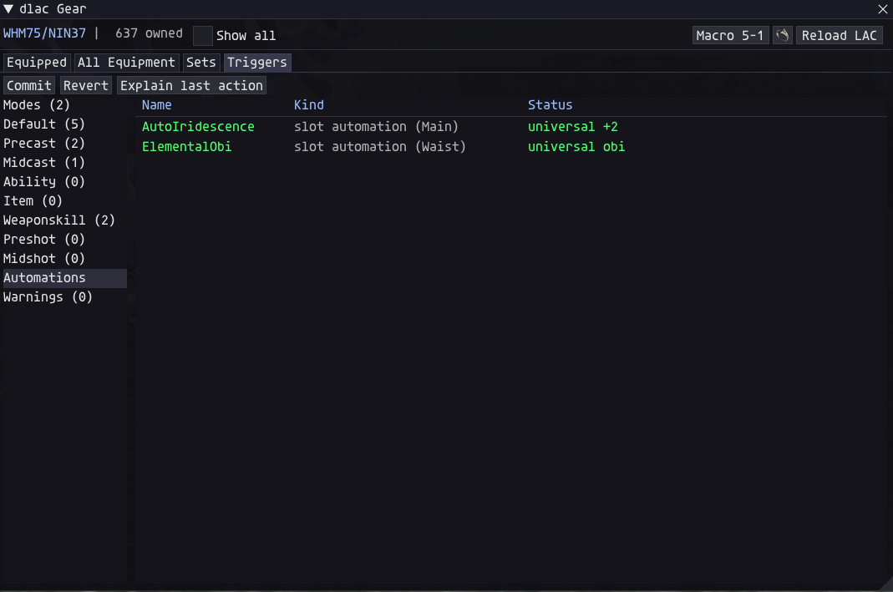
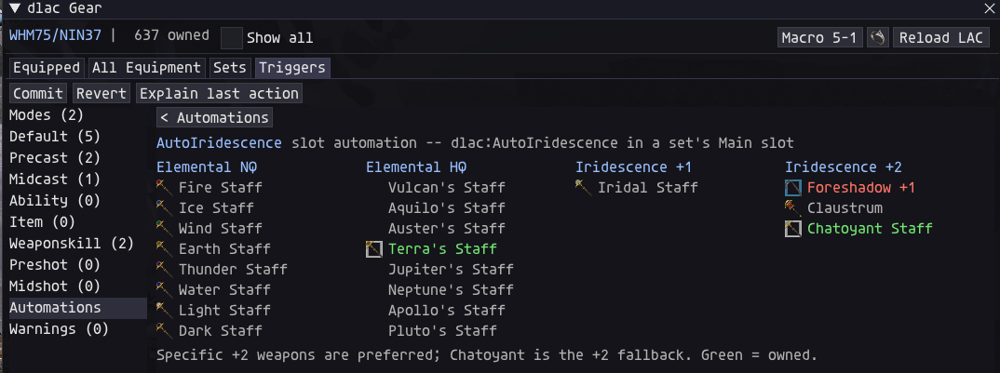
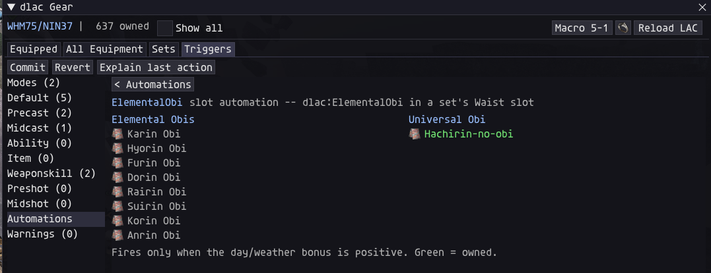
7. Small conveniences
Teleports — one click from anywhere to anywhere
The ring-icon button in the header opens every enchanted travel item you could own in one dropdown. On top, the instant options you own right now: Instant Warp and Instant Retrace scrolls (used on the spot — no equip, no wait; the row shows how many you have left), the Warp Ring, Provenance Ring, Chocobo Whistle, Nexus Cape (teleport to your party leader), and the Shadow Lord Shirt (straight to Castle Zvahl Keep). Below that, two cascading submenus — Teleport Earrings and Teleport Rings — list every destination, dim when you don't own the item yet. Click a row and dlac does the whole dance for you: locks the slot, equips the item, watches the game's own clock while the enchant delay counts down, and uses it the instant the game says ready — you keep fighting, crafting, or running in the meantime.
Each row shows its live state: lit = in an equippable bag and ready; an amber countdown = out of charges (clicking is still fine — it equips now and fires the moment the recharge ends); red = owned but stored where the game can't equip from; dim = not owned.
The top strip and the exp rings are listed only if you actually have them — a permanent dim row for something you may never stock is noise, not a reminder. The earring and ring submenus keep their dim rows: there the row is the reminder the destination exists.
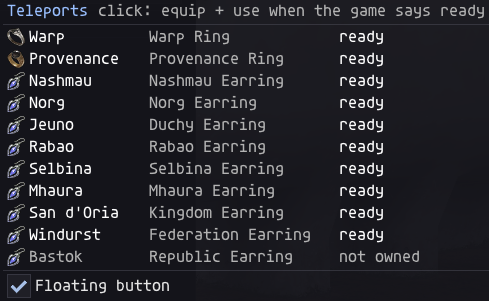
The floating button. Tick Floating button at the bottom of the menu and a small ring icon pins itself to your screen — outside the main window, always there, draggable by its edge (position is remembered). Clicking it opens the same menu, so travel never needs the main window at all. The floating menu carries the same checkbox, so unpinning is one untick from either place.
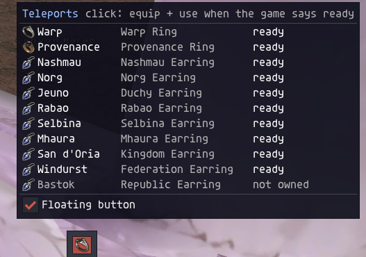
Aborting. While a teleport is counting down, the button you started it from — header or floating — turns into a red stop sign. One click cancels the whole flow (the slot unlocks, nothing fires); the ring icon returns by itself the moment the teleport either fires or is cancelled. The hover tooltip always names exactly what would be aborted.
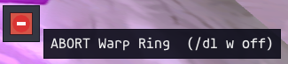
/dl w off and everything unwinds.Macro books
The Macro header button stores your macro book and set per job, applied
automatically on login and every job change. No more /macro book lines in
profiles.
8. When something looks wrong
- Red banner in the window? Do what it says — usually Reload LAC. It appears when the running engine is older than the addon (after an update).
/dl why— the single most useful command: it prints the last thing each event did — which rules matched, which set won each slot, what the automations resolved to, and why something was skipped.- A set didn't change anything? Check you Committed it and reloaded LAC (sets need the reload; triggers and modes don't).
- An item never equips? If it's red in the lists, it's in a container the game can't equip from (Mog Safe, Storage…) — move it to your Inventory or a Wardrobe.